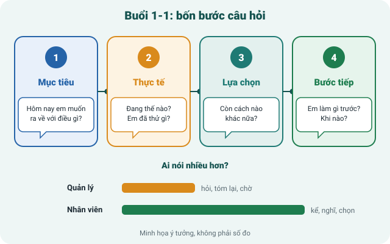

K1 · Lắng nghe và hiểu đúng › Bậc 5 Dẫn dắt
Lắng nghe để coaching trong buổi 1-1
Bài này làm Tờ 4: Trang 1-1. Mẫu in. Bài nâng cao từ Nghe và chốt việc sau họp (Bậc 3). Phần chăm sóc tinh thần của chính bạn có ở tamhonkhoe.com.
1. Mục tiêu
- Dẫn buổi 1-1 coaching 20 phút theo 4 bước: mục tiêu, thực tế, lựa chọn, bước tiếp.
- Phân biệt lúc nên coaching và lúc nên chỉ dẫn trực tiếp.
2. Khởi động truy xuất
- Sáu ô của Phiếu giao việc là gì?
- Phản hồi kịp thời khác phản hồi định kỳ thế nào?
Đáp án
- Kết quả cần có; tiêu chuẩn đạt; hạn; mức tự quyết; nguồn lực; mốc kiểm.
- Kịp thời: ngay sau sự việc, ngắn. Định kỳ: trong 1-1, nhìn lại vài tuần, chọn một điều để tiến bộ.
Xem lại: Giao việc và phản hồi.
3. Giải thích
Coaching là giúp người khác tự tìm cách giải quyết. Bạn hỏi và lắng nghe nhiều hơn là chỉ bảo. Người tự nghĩ ra cách làm thường nhớ lâu hơn và chủ động hơn.
Buổi 1-1 là của nhân viên. Họ chọn chủ đề trước. Bạn không dùng buổi này để giao việc mới hay đọc số liệu.
Bốn bước câu hỏi. Cách sắp xếp này giống mô hình GROW thường dùng trong coaching. Câu hỏi dưới đây do site tự viết.
- Mục tiêu: "Hôm nay em muốn ra về với điều gì?"
- Thực tế: "Hiện giờ đang thế nào? Em đã thử gì?"
- Lựa chọn: "Còn cách nào khác? Nếu không sợ sai, em sẽ làm gì?"
- Bước tiếp: "Em sẽ làm gì trước? Khi nào? Cần anh hỗ trợ gì?"

Ba thói quen lắng nghe.
- Chờ thêm vài giây sau khi họ ngừng nói. Ý quan trọng thường đến sau khoảng lặng.
- Tóm lại ý họ trước khi hỏi tiếp: "Ý em là… đúng không?"
- Hỏi "còn gì nữa không?" Câu trả lời đầu tiên ít khi là toàn bộ chuyện.
Khi nào không coaching. Có ba trường hợp nên chỉ dẫn trực tiếp. Một: việc gấp. Hai: liên quan an toàn hoặc pháp lý. Ba: người mới chưa có kiến thức nền. Khi đó, nói rõ cách làm, rồi coaching sau.
Tờ 4. Trang 1-1
- Chủ đề của nhân viênHọ ghi trước buổi gặp.
- Bốn bướcGhi ý chính của từng bước.
- Bước tiếp, hạnDo nhân viên chọn.
- Hỗ trợ của quản lýViệc bạn hứa làm.
Mỗi quý, dành một buổi 1-1 nói về nghề nghiệp: họ muốn học gì, đi đâu trong 1–3 năm tới.
4. Ví dụ tại nơi làm việc Việt Nam
Tình huống giả định. Anh Phúc là trưởng nhóm kỹ thuật bảo trì ở một nhà máy bao bì tại Bình Dương. Ngân, kỹ thuật viên 3 năm, đặt chủ đề 1-1: "Em hay bị máy ép số 2 làm trễ ca."
Trước đây, anh Phúc sẽ nói ngay cách sửa. Lần này anh hỏi. Mục tiêu: Ngân muốn có cách giảm thời gian dừng máy số 2. Thực tế: máy dừng 3 lần tuần trước, Ngân đã thay cảm biến một lần. Anh tóm lại: "Em đã thay cảm biến mà vẫn dừng, đúng không?" Ngân gật đầu, rồi nói thêm: hai lần dừng đều vào đầu ca đêm.
Lựa chọn: Ngân nghĩ ra ba hướng. Hỏi ca trước về cách tắt máy. Ghi nhiệt độ lúc khởi động. Đề nghị kiểm tra trước khi giao ca. Bước tiếp: Ngân sẽ ghi nhiệt độ 5 ca đêm tới. Anh Phúc hứa xin ca trước 10 phút giao ca có mặt Ngân.
Vì sao cách này tốt: anh Phúc nghe đủ lâu để Ngân nói ra chi tiết "ca đêm". Bước tiếp do Ngân chọn, nên Ngân chủ động làm.
5. Thực hành
Tình huống giả định. Bạn là trưởng nhóm marketing ở một công ty mỹ phẩm tại Hà Nội. Trang, nhân viên 2 năm, đặt chủ đề 1-1: "Em thấy mình làm mãi một việc, không tiến bộ."
Viết một câu hỏi cho mỗi bước. Viết một câu tóm lại ý của Trang. Cho biết đây có phải lúc nên chỉ dẫn trực tiếp không.
Gợi ý 1
"Tiến bộ" với Trang là gì? Câu hỏi bước Mục tiêu nên giúp Trang nói rõ điều đó.
Gợi ý 2
Việc này có gấp không? Có rủi ro an toàn hay pháp lý không?
Lời giải mẫu
- Mục tiêu: "Sau buổi này, em muốn rõ được điều gì về việc tiến bộ của mình?"
- Thực tế: "Việc em đang làm mỗi tuần là gì? Phần nào em thấy đã thành thạo?"
- Tóm lại: "Ý em là việc viết bài mạng xã hội em đã làm tốt, giờ muốn thử việc khó hơn, đúng không?"
- Lựa chọn: "Trong đội, việc nào em muốn thử? Em có thể học từ ai?"
- Bước tiếp: "Em sẽ làm gì trước tuần sau? Anh hỗ trợ được gì?"
- Có nên chỉ dẫn trực tiếp không: không. Việc không gấp, không rủi ro an toàn. Đây là lúc coaching và nói về nghề nghiệp.
6. Tự kiểm tra
Chọn đáp án. Mỗi lựa chọn đều có giải thích.
Câu 1. Nhân viên mở đầu 1-1: "Em bị khách phàn nàn hoài." Câu nào hợp với bước đầu tiên?
-
Chưa đúng. Đây là lời khuyên, không phải câu hỏi. Bạn chưa biết họ muốn gì từ buổi này.
-
Đúng. Đúng. Bước Mục tiêu giúp người được coaching nói rõ điều họ cần.
-
Chưa đúng. Đi thẳng vào chi tiết, bạn dễ giành quyền dẫn câu chuyện và bắt đầu tự giải quyết thay.
Câu 2. Nhân viên vừa trả lời xong và im lặng. Bạn nên làm gì?
-
Chưa đúng. Lấp khoảng lặng quá nhanh có thể làm mất ý quan trọng họ sắp nói.
-
Đúng. Đúng. Ý quan trọng thường đến sau khoảng lặng hoặc sau câu hỏi "còn gì nữa".
-
Chưa đúng. Câu trả lời đầu tiên ít khi là toàn bộ câu chuyện.
Câu 3. Trường hợp nào nên chỉ dẫn trực tiếp thay vì coaching?
-
Chưa đúng. Đây là lúc rất hợp để coaching. Lộ trình do chính họ chọn thì họ mới theo.
-
Đúng. Đúng. Việc liên quan an toàn và người mới chưa có kiến thức nền. Chỉ dẫn ngay, coaching sau.
-
Chưa đúng. Việc không gấp, không rủi ro an toàn. Coaching giúp họ tự tìm cách hợp với mình.
Câu 4. Cuối buổi 1-1, ai nên chọn bước tiếp theo?
-
Chưa đúng. Bước do người khác chọn thì dễ bị làm cho có.
-
Đúng. Đúng. Người tự chọn bước tiếp thì chủ động hơn. Quản lý cam kết phần hỗ trợ của mình.
-
Chưa đúng. Không có bước tiếp thì buổi 1-1 khó tạo ra thay đổi.
7. Phản tư
- Trong buổi 1-1 gần nhất, ai nói nhiều hơn: bạn hay nhân viên?
- Câu hỏi nào trong 4 bước bạn ít dùng nhất?
8. Áp dụng thật
Trong 7 ngày tới, dẫn một buổi 1-1 theo Tờ 4. Nhờ nhân viên ghi chủ đề trước. Trong buổi, đếm xem bạn tóm lại ý họ được mấy lần.
9. Siêu dữ liệu
| skill | K1 · Lắng nghe và hiểu đúng |
|---|---|
| level | Bậc 5 · Dẫn dắt |
| group | N5 |
| framework_map | WEF: Empathy and active listening; Talent management; SkillsFuture CCS: Developing People; Communication; NACE: Leadership; LifeComp: S1 Empathy; S2 Communication (chỉ dẫn chiếu) |
| updated | 2026-11-14 |
Hoàn thành bài
Đánh dấu đã học để site gợi ý lịch ôn sau 1, 3 và 7 ngày. Dữ liệu chỉ lưu trên máy của bạn.
Lịch ôn gợi ý: